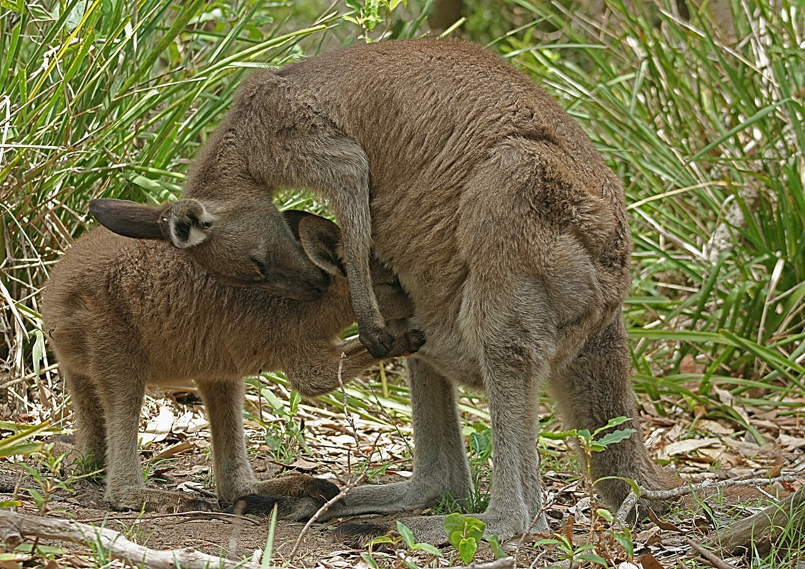

호주 동부 회색 캥거루
유명한 언어 에피소드가 있습니다. 1770년 영국의 쿡 선장이 호주에 상륙해 이상한 동물을 가리키며 원주민에게 물었습니다 — "저게 뭡니까?"
원주민의 대답은 "kangaroo"였습니다. 쿡 선장은 이걸 동물 이름으로 받아 적었습니다. 그런데 나중에 밝혀진 해석으로는 — "모르겠다"였다는 이야기가 퍼졌습니다.
어원이 사실이든 전설이든 — 교훈은 같습니다. 이름은 한 번 굳어지면, 진실과 상관없이 세계를 분류하는 기준이 됩니다. 우리는 지금 "캥거루"라는 단어 없이 이 동물을 생각하기 어렵습니다.